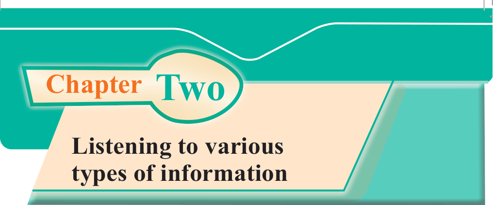
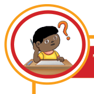
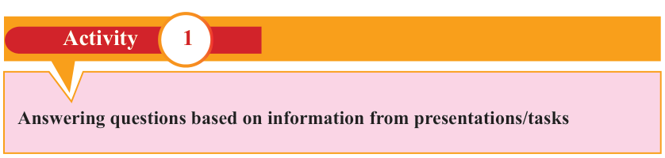

English for Secondary Schools Student’s Book Form One, printed page 9

Chapter Two
Listening to various types of information
Introduction
Listening is a very important skill in learning English since it enables a person to engage, understand, connect, sympathise and acquire knowledge and information from different sources. In this chapter, you will learn to listen to and acquire information from presentations and answer questions accordingly. You will then practise pronouncing and writing words heard from oral, audio and audio-visual sources. Furthermore, you will learn to reproduce messages from oral presentations. The competencies developed will help you to interpret oral messages and enhance your communication in various contexts.

Think about
- 1. things you like to listen to.
- 2. the importance of paying attention while listening.

Activity
1
Answering questions based on information from presentations/tasks